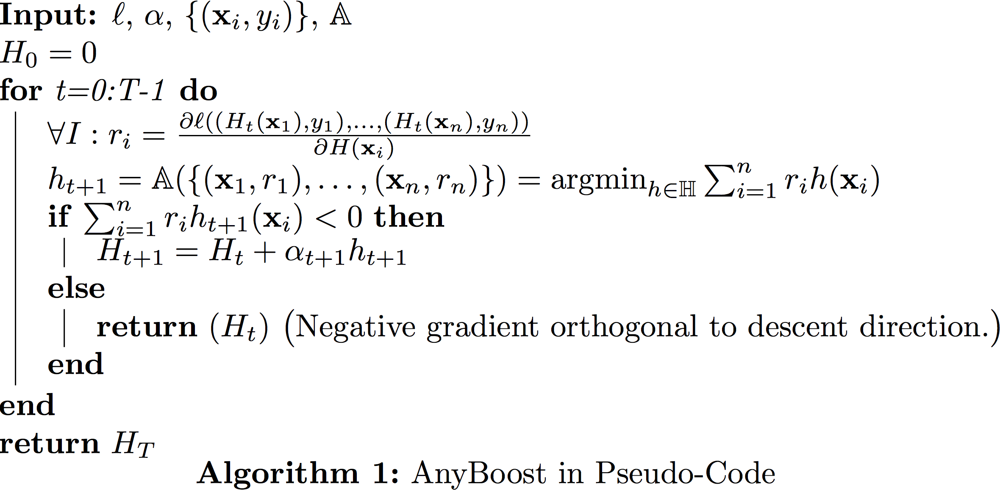
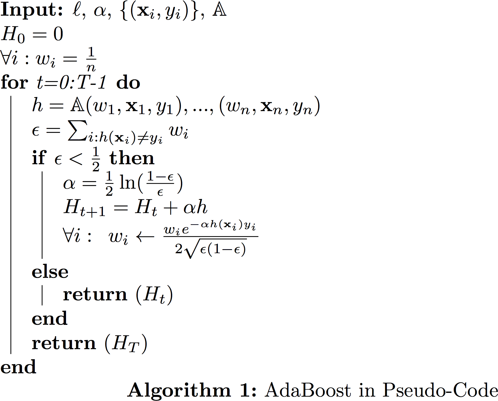

19: Boosting
Boosting reduces Bias
Scenario: Hypothesis class $\mathbb{H}$, the sets of classifiers, has large bias, i.e. training error is high.
Famous question:
In his machine learning class project in 1988 Michael Kearns famously asked the question: Can weak learners ($H$) be combined to generate a strong learner with low bias?
Famous answer: Yes! (Robert Schapire in 1990)
Solution: Create ensemble classifier $H_T(\vec x) = \sum_{t = 1}^{T}\alpha_t h_t(\vec{x})$. This ensemble classifier is built in an iterative fashion. In iteration $t$ we add the classifier $\alpha_th_t(\vec x)$ to the ensemble. During test time we evaluate all classifier and return the weighted sum.
The process of constructing such an ensemble in a stage-wise fashion is very similar to gradient descent. However, instead of updating the model parameters in each iteration, we add functions to our ensemble.
Let $\ell$ denote a (convex and differentiable) loss function. With a little abuse of notation we write
\begin{equation}
\ell(H)=\frac{1}{n}\sum_{i=1}^n \ell(H(\mathbf{x}_i),y_i).
\end{equation}
Assume we have already finished $t$ iterations and already have an ensemble classifier $H_t(\vec{x})$. Now in iteration $t+1$ we want to add one more weak learner $h_{t+1}$ to the ensemble. To this end we search for the weak learner that minimizes the loss the most,
\begin{equation}
h_{t+1} = \textrm{argmin}_{h \in \mathbb{H}}\ell(H_t + \alpha h_t).
\end{equation}
Once $h_{t+1}$ has been found, we add it to our ensemble, i.e. $H_{t+1} := H_t + \alpha h$.
How can we find such $h \in \mathbb{H}$?
Answer: Use gradient descent in function space.
In function space, inner product can be defined as $< h,g >=\int\limits_x h(x)g(x)dx$.
Since we only have training set, we define
$< h,g>= \sum_{i = 1}^{n} h(\mathbf{x}_i)g(\mathbf{x}_i)$.
Gradient descent in functional space
Given $H$, we want to find the step-size $\alpha$ and (weak learner) $h$ to minimize the loss $\ell(H+\alpha h)$.
Use Taylor Approximation on $\ell(H+\alpha h)$.
\begin{equation}
\ell(H+\alpha h) \approx \ell(H) + \alpha<\nabla \ell(H),h>. \label{c8:eq:taylorapprox}
\end{equation}
This approximation (of $\ell$ as a linear function) only holds within a small region around $\ell(H)$, i. as long as $\alpha$ is small. We therefore fix it to a small constant (e.g. $\alpha\approx 0.1$).
With the step-size $\alpha$ fixed, we can use the approximation above to find an almost optimal $h$:
\begin{equation}
\textrm{argmin}_{h\in H}\ell(H+\alpha h) \approx \textrm{argmin}_{h\in H}<\nabla \ell(H),h>= \textrm{argmin}_{h \in \mathbb{H}}\sum_{i = 1}^{n}\frac{\partial \ell}{\partial [H(\mathbf{x}_i)]}h(\mathbf{x}_i)
\end{equation}
We can write $\ell(H) = \sum_{i = 1}^{n}\ell(H(\mathbf{x}_i)) = \ell(H(x_1), ... , H(x_n))$ (each prediction is an input to the loss function)
$\frac{\partial \ell}{\partial H}(\mathbf{x}_i) = \frac{\partial \ell}{\partial [H(\mathbf{x}_i)]}$
So we can do boosting if we have an algorithm $\mathbb{A}$ to solve
$h_{t+1} = \textrm{argmin}_{h \in \mathbb{H}} \sum_{i = 1}^{n} \underbrace{\frac{\partial \ell}{\partial [H(\mathbf{x}_i)]}}_{r_i} h(x)$
We need a function $\mathbb{A}(\{(\mathbf{x}_1,r_1),\dots,(\mathbf{x}_n,r_n)\})=\textrm{argmin}_{h \in \mathbb{H}} \sum_{i = 1}^{n} r_i h(\mathbf{x}_i)$. In order to make progress this $h$ does not have to be great. We still make progress as long as $\sum_{i = 1}^{n} r_i h(\mathbf{x}_i)<0$.
Generic boosting (a.k.a Anyboost)

Case study #1: Gradient Boosted Regression Tree(GBRT)
- Classification ($ y_i \in \{+1,-1\} $) or (even multi-dimensional) regression ($y_i\in\mathcal{R}^k$)
- Weak learners,$h \in \mathbb{H}$, are regressors, $h(\mathbf{x}) \in \mathcal{R}, \forall \mathbf{x} $, typically fixed-depth (e.g. depth=4) regression trees (hence the name).
- Step size $\alpha$ is fixed to a small constant (hyper-parameter).
- Loss function: Any differentiable convex loss that decomposes over the samples $\mathcal{L}(H)=\sum_{i=1}^{n} \ell(H(\mathbf{x}_i))$
In order to use regression trees for gradient boosting, we must be able to find a tree $h()$ that maximizes $h = \textrm{argmin}_{h \in \mathbb{H}} \sum_{i = 1}^{n} r_i h(\mathbf{x}_i)$ where $r_i = \frac{\partial \ell}{\partial H(\mathbf{x}_i)}$.
We will make two assumptions:
First, we assume that $\sum_{i = 1}^{n} h^2(\mathbf{x}_i)$ = constant. This is simple to do (we normalize the predictions) and important because we could always decrease $\sum_{i=1}^n h(\mathbf{x}_i)r_i$ by rescaling $h$ with a large constant. By fixing $\sum_{i=1}^n h^s(\mathbf{x}_i)$ to a constant we are essentially fixing the vector $h$ to lie on a circle, and we are only concerned with its direction but not its length.
- CART trees are negation closed, i.e. $\forall \enspace h \in \mathbb{H}$ => $\exists -\!h \in \mathbb{H}$. (This is generally true.)
- We can define the negative graident as $t_i=-r_i$.
$\textrm{argmin}_{h \in \mathbb{H}} \sum_{i = 1}^{n} r_i h(\mathbf{x}_i)$
= $\textrm{argmin}_{h \in \mathbb{H}}-2\sum_{i = 1}^{n} t_i h(\mathbf{x}_i)$
= $-\textrm{argmin}_{h \in \mathbb{H}} \sum_{i = 1}^{n} \underbrace{t_i^2}_{\textrm{constant}} - 2t_i h(\mathbf{x}_i) + \underbrace{(h(\mathbf{x}_i))^2}_{\textrm{constant}}$
= $-\textrm{argmin}_{h \in \mathbb{H}}\sum_{i = 1}^{n}(h(\mathbf{x}_i)-t_i)^2$
In other words, we can use the good old Regression trees and feed in the value $r_i$ as labels for each $\mathbf{x}_i.$ Each iteration we build a new tree for a different set of "labels" $r_1,\dots,r_n$.
If the loss function $\ell$ is the squared loss, i.e. $\ell(H)=\frac{1}{2}\sum_{i=1}^n (H(\mathbf{x}_i)-y_i)^2$, then it is easy to show that
$$t_i=-\frac{\partial \ell}{H(\mathbf{x}_i)}=y_i-H(\mathbf{x}_i),$$
which is simply the residual, i.e. $\mathbf{r}$ is the vector pointing from $\mathbf{y}$ to $\mathbf{H}$. However, it is important that you can use any other differentiable and convex loss function $\ell$, and the solution for your next weak learner $h()$ will always be the regression tree minimizing the squared loss.
GBRT in Pseudo Code
Case Study #2: AdaBoost
- Setting: Classification ($ y_i \in \{+1,-1\} $)
- Weak learners:
$ h \in \mathbb{H} $ are binary, $h(\mathbf{x}_i) \in \{-1,+1\}, \forall x $
- Step-size: We perform line-search to obtain best step-size $\alpha$.
- Loss function: Exponential loss $\ell(H)=\sum_{i=1}^{n} e^{-y_i H(\mathbf{x}_i)}$
Finding the best weak learner
First we compute the gradient $r_i=\frac{\partial \ell}{\partial H(\mathbf{x}_i)}=-y_i {e^{-y_i H(\mathbf{x}_i)}}$.
For notational convenience (and for reason that will become clear in a little bit), let us define $w_i= \frac{1}{Z}e^{-y_iH(\mathbf{x}_i)}$, where $Z=\sum_{i=1}^{n} e^{-y_iH(\mathbf{x}_i)}$ is a normalizing factor so that $\sum_{i=1}^{n} w_i=1.$ Note that the normalizing constant $Z$ is identical to the loss function. Each weight $w_i$ therefore has a very nice interpretation. It is the relative contribution of the training point $(\mathbf{x}_i,y_i)$ towards the overall loss.
In order to find the best next weak learner, we need to solve the optimization problem: (in the following, we will make use of the fact that $h(\mathbf{x}_i)\in \{+1,-1\}$.)
\begin{align}
h(\mathbf{x}_i)&=\textrm{argmin}_{h \in \mathbb{H}}\sum_{i=1}^{n}r_ih(\mathbf{x}_i)
&& \Big(\textrm{substitute in: } r_i=e^{-H(\mathbf{x}_i)y_i}\Big)\\
&=\textrm{argmin}_{h \in \mathbb{H}}-\sum_{i=1}^n y_i e^{-H(\mathbf{x}_i)y_i}h(\mathbf{x}_i)
&& \Big(\textrm{substitute in: } w_i=\frac{1}{Z}e^{-H(\mathbf{x}_i)y_i}\Big)\\
&=\textrm{argmin}_{h \in \mathbb{H}}-\sum_{i=1}^{n} w_i y_i h(\mathbf{x}_i)
&& \Big(y_ih(\mathbf{x}_i)\in \{+1,-1\} \textrm{ with } h(\mathbf{x}_i)y_i=1 \iff h(\mathbf{x}_i)=y_i \Big)\\
&=\textrm{argmin}_{h \in \mathbb{H}}\sum_{i: h(\mathbf{x}_i)\neq y_i} w_i - \sum_{i: h(\mathbf{x}_i)= y_i} w_i
&& \Big(\sum_{i: h(\mathbf{x}_i)= y_i} w_i=1-\sum_{i: h(\mathbf{x}_i)\neq y_i} w_i\Big)\\
&=\textrm{argmin}_{h \in \mathbb{H}}\sum_{i: h(\mathbf{x}_i)\neq y_i} w_i
&& \Big(\textrm{This is the weighted classification error.}\Big)
\end{align}
Let us denote this weighted classification error as $\epsilon=\sum_{i:h(\mathbf{x}_i)y_i=-1} w_i$. So for AdaBoost, we only need a classifier that can take training data and a distribution over the training set (i.e. normalzied weights $w_i$ for all training samples) and which returns a classifier $h\in H$ that reduces the weighted classification error of these training samples. It doesn't have to do all that well, in order for the inner-product $\sum_i r_i h(\mathbf{x}_i)$ to be negative, it just needs less than $\epsilon<0.5$ weighted training error.
Finding the stepsize $\alpha$
In the previous example, GBRT, we set the stepsize $\alpha$ to be a small constant. As it turns out, in the AdaBoost setting we can find the optimal stepsize (i.e. the one that minimizes $\ell$ the most) in closed form every time we take a "gradient" step.
When we are given $\ell, H, h$, we would like to solve the following optimization problem:
\begin{align}
\alpha&=\textrm{argmin}_{\alpha}\ell(H+\alpha h)\\
&=\textrm{argmin}_{\alpha} \sum_{i=1}^{n} e^{-y_i[H(\mathbf{x}_i)+\alpha h(\mathbf{x}_i)]}\\
\end{align}
We differentiate w.r.t. $\alpha$ and equate with zero:
\begin{align}
\sum_{i=1}^{n} y_i h(\mathbf{x}_i) e^{-y_i H(\mathbf{x}_i)+\alpha y_i h(\mathbf{x}_i)} &=0
&& \Big( y_ih(\mathbf{x}_i)\in\{+1,-1\}\Big)\\
-\sum_{i:h(\mathbf{x}_i) y_i=1} e^{-(y_i H(\mathbf{x}_i)+\alpha \underbrace{y_i h(\mathbf{x}_i)}_\mathrm{1})} + \sum_{i:h(\mathbf{x}_i) y_i \neq 1} e^{-(y_i H(\mathbf{x}_i)+\alpha \underbrace{y_i h(\mathbf{x}_i)}_\mathrm{-1})}&=0
&& \Big(w_i= \frac{1}{Z}e^{-y_iH(\mathbf{x}_i)}\Big)\\
-\sum_{i:h(\mathbf{x}_i) y_i=1} w_i e^{-\alpha} + \sum_{i:h(\mathbf{x}_i) y_i \neq 1} w_i e^{\alpha}&=0
&& \Big( \epsilon=\!\!\sum_{i:h(\mathbf{x}_i)y_i=-1} \!\!w_i \Big)\\
-(1-\epsilon)e^{-\alpha}+\epsilon e^{\alpha}&=0
&& \\
e^{2 \alpha}&=\frac{1-\epsilon}{\epsilon}\\
\alpha&=\frac{1}{2}\ln \frac{1-\epsilon}{\epsilon}\\
\end{align}
It is unusual that we can find the optimal step-size in such a simple closed form. One consequence is that AdaBoost converges extremely fast.
Re-normalization
After you take a step, i.e. $H_{t+1}=H_{t}+\alpha h$, you need to re-compute all the weights and then re-normalize. It is however straight-forward to show that the unnormalized weight $\hat{w}_i$ is updated as
$$\hat{w}_i \leftarrow \hat{w_i}*e^{-\alpha h(\mathbf{x}_i)y_i}$$
and that the normalizer $Z$ becomes
$$Z\leftarrow Z * 2\sqrt{\epsilon(1-\epsilon)}.$$
Putting these two together we obtain the following multiplicative update rule:
$${w}_i\leftarrow w_i\frac{e^{-\alpha h(\mathbf{x}_i)y_i}}{2\sqrt{\epsilon(1-\epsilon)}}.$$
AdaBoost Pseudo-code

Further analysis
Let us examine each one of these updates.
- The weight update:
$$\hat{w}_i \leftarrow \hat{w_i}*e^{-\alpha h(\mathbf{x}_i)y_i},$$
as, $h(\mathbf{x}_i)y_i$ is either $+1$ (if classified correctly by this weak learner) or $-1$ (otherwise), it follows that this weight update multiplies the weight $w_i$ either by a factor $e^\alpha>1$ if it was classified incorrectly (i.e. increases the weights), or by a factor $e^{-\alpha}<1$ if it was classified correctly (i.e. decreases the weight).
- Normalization update:
$$Z\leftarrow Z *2\sqrt{\epsilon(1-\epsilon)}.$$
Previously we established that the normalizer $Z$ is identical to the loss. We can therefore use it to bound the loss function after $T$ iterations:
$$\ell(H)=Z=n\prod_{t=1}^T 2\sqrt{\epsilon_t(1-\epsilon_t)},$$
(the factor $n$ comes from the fact that the initial $Z_0=n$, when all weights are $\frac{1}{n}$. )
If we define $c=\max{t} \epsilon_t$, we can establish
$$\ell(H)\leq n\left[2\sqrt{c(1-c)}\right]^T.$$
The function $c(1-c)$ is maximized at $c=\frac{1}{2}$. But we know that each $\epsilon_t<\frac{1}{2}$ (or else the algorithm would have terminated). Therefore $c(1-c)<\frac{1}{4}$ and we can re-write it as $c(1-c)=\frac{1}{4}-\gamma^2$, for some $\gamma$.
This leaves us with
$$\ell(H)\leq n\left(1-4\gamma^2\right)^{\frac{T}{2}}.$$
In other words, the training loss is decreasing exponentially!
In fact, we can go even further and compute after how many iterations we must have zero training error. Note that the training loss is an upper bound on the training error (defined as $\sum_{i=1}^n \delta_{H(\mathbf{x}_i)\neq y_i})$ - simply because $\delta_{H(\mathbf{x}_i)\neq y_i}< e^{-y_i H(\mathbf{x}_i)}$ in all cases. We can then compute the number of steps required until the loss is less than $1$, which would imply that not a single training input is misclassified.
$$n\left(1-4\gamma^2\right)^{\frac{T}{2}}< 1 \Rightarrow T>\frac{2\log(n)}{\log(\frac{1}{1-4\gamma^2})}.$$
This is an amazing result. It shows that after $O(\log(n))$ iterations your training error must be zero. In practice it often makes sense to keep boosting even after you make no more mistakes on the training set.
Summary
Boosting is a great way to turn a week classifier into a strong classifier. It defines a whole family of algorithms, including Gradient Boosting, AdaBoost, LogitBoost, and many others ...
Gradient Boosted Regression Trees is one of the most popular algorithms for Learning to Rank, the branch of machine learning focused on learning ranking functions, for example for web search engines.
A few additional things to know:
- The step size $\alpha$ is often was referred to as shrinkage.
- Some people do not consider gradient boosting algorithms to be part of the boosting family, because they have no guarantee that the training error decreases exponentially. Often these algorithms are referred to as stage-wise regression instead.
- Inspired by Breiman's Bagging, stochastic gradient boosting subsamples the training data for each weak learning. This combines the benefits of bagging and boosting. One variant is to subsample only $n/2$ data points without replacement, which speeds up the training process. Stoachstic gradient boosting also gives rise to out-of-bag error estimates.
- One advantage of boosted classifiers is that during test time the computation $H(\mathbf{x})=\sum_{t=1}^T \alpha_t h_t(\mathbf{x}_t)$ can be stopped prematurely if it becomes clear which way the prediction goes. This is particularly interesting in search engines, where the exact ranking of results is typically only interesting for the top 10 search results. Stopping the evaluation of lower ranked search results can lead to tremendous speed ups. A similar approach is also used by the Viola-Jones algorithm to speed up face detection in images. Here, the algorithm scans regions of an image to detect possible faces. As almost all regions and natural images do not contain faces, there are huge savings if the evaluation can be stopped after just a few week learners are evaluated. These classifiers are referred to as cascades, that spend very little time on the common case (no face), but more time on the rare interesting case (face). With this approach Viola and Jones were the first to solve face recognition in real-time on low performance hardware (e.g. cameras).
- AdaBoost is an extremely powerful algorithm, that turns any weak learner that can classify any weighted version of the training set with below $0.5$ error into a strong learner whose training error decreases exponentially and that requires only $O(\log(n))$ steps until it is consistent.